Part 11 Propensity Score Analysis 2: Weighting
Inverse probability (or propensity) weighting (IPW) is probably the easiest propensity-score method to use. In this session, we continue with the data from the previous unit but this time we have split it into two data sets: one with all the covariates and another with only the outcome variables. This is good practice because we separate the decisions the researcher makes into two independent steps. The first step involves finding the best combination of covariates, deciding on a method of propensity-score estimation, and deciding which propensity-score adjustment method to use—weighting, stratification, or matching (we use weighting in this unit). In the second step, we estimate the causal effect.
We will assess imbalance and overlap in our covariates before and after applying the IPW adjustments. We will use some custom functions for this (which we will not elaborate on). For this first part, we will use the same method—logistic regression—for estimating the propensity scores. The outputs of the balance statistics and plots help us in evaluating how well the IPWs worked. After this, we will estimate the effect using the survey package (Lumley, 2021), which is valuable for correctly estimating the standard error. Finally, we will try out the twang package (Cefalu et al., 2021), which is one of many propensity-score packages that has functions for estimating propensity scores and applying weighting. With twang, we will not use logistic regression but instead will use a generalized boosted model, which is the default in twang’s function. We end by estimating the causal effect given these GBM inverse probability (IP) weights, again with the survey package.
11.1 Import the Data and Prepare for Analysis
Let’s import a version of the data set that has excluded the outcome variable. After we examine how well the propensity score model addressed overlap and covariate balance, we will merge the two data sets—the one with the outcome variable and this one—so we can estimate the ATE and ATT.
ca <- read.csv("ch12_catholic_WOoutcome.csv", stringsAsFactors = TRUE)
str(ca)## 'data.frame': 5671 obs. of 34 variables:
## $ id : int 124902 124915 124916 124932 124944 124966 124968 124970 124972 124974 ...
## $ hsgrad : Factor w/ 2 levels "no","yes": 2 2 2 2 2 2 2 2 2 2 ...
## $ inpse : Factor w/ 2 levels "no","yes": 2 2 2 2 2 2 2 2 2 1 ...
## $ catholic : Factor w/ 2 levels "no","yes": 2 2 2 2 2 2 2 2 2 2 ...
## $ read8 : num 56 63.1 61 45.3 55.9 ...
## $ math8 : num 50.3 51.5 47.6 46.6 60.2 ...
## $ female : Factor w/ 2 levels "no","yes": 1 1 2 2 2 2 1 1 1 1 ...
## $ race : Factor w/ 5 levels "ai","api","black",..: 5 5 5 5 5 5 5 5 5 5 ...
## $ white : Factor w/ 2 levels "no","yes": 2 2 2 2 2 2 2 2 2 2 ...
## $ black : Factor w/ 2 levels "no","yes": 1 1 1 1 1 1 1 1 1 1 ...
## $ hisp : Factor w/ 2 levels "no","yes": 1 1 1 1 1 1 1 1 1 1 ...
## $ api : Factor w/ 2 levels "no","yes": 1 1 1 1 1 1 1 1 1 1 ...
## $ nativam : Factor w/ 2 levels "no","yes": 1 1 1 1 1 1 1 1 1 1 ...
## $ parmar8 : Factor w/ 6 levels "divorced","married",..: 2 2 2 2 2 2 2 2 2 1 ...
## $ faminc8 : Factor w/ 12 levels "$1000-$2999",..: 5 5 5 5 9 2 5 5 5 3 ...
## $ fathed8 : Factor w/ 8 levels "coll <4","coll grad",..: 5 4 8 4 5 8 5 7 6 5 ...
## $ mothed8 : Factor w/ 8 levels "coll <4","coll grad",..: 5 4 3 4 5 5 5 6 6 1 ...
## $ fhowfar : Factor w/ 6 levels "coll <4","coll grad",..: 1 1 1 2 2 2 1 2 2 2 ...
## $ mhowfar : Factor w/ 6 levels "coll <4","coll grad",..: 1 2 1 2 2 2 1 2 2 2 ...
## $ fight8 : Factor w/ 3 levels "more than twice",..: 2 2 2 2 2 2 2 3 3 1 ...
## $ nohw8 : Factor w/ 2 levels "no","yes": 1 1 1 1 1 1 1 1 1 2 ...
## $ disrupt8 : Factor w/ 2 levels "no","yes": 1 1 1 1 1 1 1 2 2 2 ...
## $ riskdrop8: int 1 0 0 1 1 1 0 1 0 1 ...
## $ catN : int 1 1 1 1 1 1 1 1 1 1 ...
## $ faminc8N : int 10 10 10 10 11 7 10 10 10 8 ...
## $ inc8 : num 30 30 30 30 42.5 12.5 30 30 30 17.5 ...
## $ mathfam : num 1508 1546 1427 1398 2559 ...
## $ fhowfarN : int 3 3 3 4 4 4 3 4 4 4 ...
## $ mhowfarN : int 3 4 3 4 4 4 3 4 4 4 ...
## $ fight8N : int 0 0 0 0 0 0 0 1 1 2 ...
## $ nohw8N : int 0 0 0 0 0 0 0 0 0 1 ...
## $ disrupt8N: int 0 0 0 0 0 0 0 1 1 1 ...
## $ parmar8N : int 1 1 1 1 1 1 1 1 1 0 ...
## $ inc8Sq : num 900 900 900 900 1806 ...Many of these are coded as factors because we used stringsAsFactors = TRUE when we read in our data with read.csv(). We also have the numeric versions of these covariates, which we had created in our previous unit.
# If we wanted to use all of the covariates, here they are:
# covnames<- c("female", "race", "white", "black", "hisp", "api",
# "nativam", "parmar8","parmar8N", "faminc8", "fathed8", "mothed8",
# "fhowfar", "fhowfarN", "mhowfar", "mhowfarN",
# "fight8", "fight8N", "nohw8","nohw8N", "disrupt8","disrupt8N", "riskdrop8" )
# covnames<- c("inc8", "math8", "female", "white", "black", "hisp", "api", #api = Asian or Pacific Islander
# "nativam", "parmar8N", "fhowfarN", "mhowfarN",
# "fight8N", "nohw8N", "disrupt8N", "riskdrop8" )
# Alternatively, if we want to cf to Murnane & Willett's analysis, we use these:
covnames<- c("inc8", "inc8Sq", "math8", "mathfam", "fhowfarN",
"mhowfarN", "fight8N", "nohw8N", "disrupt8N",
"riskdrop8")
summary(ca[,covnames])## inc8 inc8Sq math8 mathfam
## Min. : 0.00 Min. : 0.0 Min. :34.48 Min. : 0.0
## 1st Qu.:17.50 1st Qu.: 306.2 1st Qu.:43.45 1st Qu.: 926.8
## Median :30.00 Median : 900.0 Median :50.45 Median :1578.0
## Mean :32.66 Mean :1367.1 Mean :51.49 Mean :1728.7
## 3rd Qu.:42.50 3rd Qu.:1806.2 3rd Qu.:58.55 3rd Qu.:2394.4
## Max. :62.50 Max. :3906.2 Max. :77.20 Max. :4825.0
## fhowfarN mhowfarN fight8N nohw8N
## Min. :0.000 Min. :0.000 Min. :0.0000 Min. :0.0000
## 1st Qu.:4.000 1st Qu.:4.000 1st Qu.:0.0000 1st Qu.:0.0000
## Median :4.000 Median :4.000 Median :0.0000 Median :0.0000
## Mean :3.818 Mean :3.858 Mean :0.2192 Mean :0.1434
## 3rd Qu.:5.000 3rd Qu.:5.000 3rd Qu.:0.0000 3rd Qu.:0.0000
## Max. :5.000 Max. :5.000 Max. :2.0000 Max. :1.0000
## disrupt8N riskdrop8
## Min. :0.0000 Min. :0.0000
## 1st Qu.:0.0000 1st Qu.:0.0000
## Median :0.0000 Median :0.0000
## Mean :0.1795 Mean :0.6237
## 3rd Qu.:0.0000 3rd Qu.:1.0000
## Max. :1.0000 Max. :5.000011.2 Specify Custom Functions
Let’s create some custom functions. The first ones are for assessing imbalance due to selection bias. The next are for examining overlap and common support. I credit Peter Steiner with the original versions of these functions, which I have further modified. Any mistakes are due to my own modifications. We can also use functions from packages developed for propensity score analyses, such as twang (Cefalu et al., 2021), to achieve similar imbalance statistics and plots.
11.2.1 Imbalance functions
As we have done before, we will assess imbalance in the observed covariates in the levels of the treatment variable, catholic, by examining the standardized mean difference and variance ratio. Here are the three arguments in this function:
xis our baseline covariate,grpis our grouping variable (catholicin our data), andwtis the weight applied to the unit.
This version of our custom function has an additional component that our previous one did not, wt =. In this lesson, the weight is the IPW (the inverse-propensity weight). We can also use this function for stratum weights that use marginal mean weighting through stratification (MMWS). When examine balance before applying IPW or MMWS, we specify the weights of each observation as being the same. We’ve specified this as the default with wt = rep(1, length(x)). Within the function, we estimate the weighted mean and variance of the covariate.67
wselect.diff <- function(x, grp, wt = rep(1, length(x))) {
if (is.factor(grp)) grp <- as.numeric(grp) - 1 # transform dichotomous factor into dummy
if (is.factor(x)) x <- as.numeric(x) - 1 # transform dichotomous factor into dummy
stat.wt <- function(xw) { # function computing weighted mean and variance
out <- cov.wt(xw[, 1, drop = F], xw[, 2])
c(mean.wt = out$center, var.wt = out$cov)
}
stat <- unlist(by(cbind(x, wt), grp, stat.wt)) # weighted mean and variance (vector)
m <- stat[seq(1, 4, by = 2)] # extract means
v <- stat[seq(2, 4, by = 2)] # extract variances
B <- (m[2] - m[1]) / sqrt(sum(v) / 2) # standardized difference in means
R <- v[2] / v[1] # variance ratio
rslt <- summary(lm(x ~ grp, weights = wt)) # run regression test
res <- c(rslt$coef[2, c(1:2, 4)], B, R)
names(res) <- c("Mean.Diff", "Std.Error", "p-value", "Std.Mean.Diff", "Var.Ratio")
res
}This next one generates a plot of the imbalance statistics output from the previous function if we have saved the output as a matrix, as we do later on.
imbal_plotter <- function(imbal_table, subtitle = NULL){
par(mfrow = c(1,1))
B4plot <- imbal_table[, "Std.Mean.Diff"]
R4plot <- imbal_table[, "Var.Ratio"]
plot(B4plot, R4plot, xlim = c(-1, 1), ylim=c(0, max(2,max(R4plot)) ), pch = 16,
main = paste('Imbalance \n', subtitle),
xlab = 'Std. Mean Difference', ylab = 'Variance Ratio')
abline(h = 1, v = 0)
abline(h = c(4/5, 5/4), v = c(-.1, .1), lty = 3) #Rubin's benchmarks
abline(v = c(-.2, .2), lty = 15, col="brown") #More lenient (but common) std.M-diff benchmarks
# labels for imbalanced covariates
index4plot <- (abs(B4plot) > .1 | R4plot < 4/5 | R4plot > 5/4)
if(sum(index4plot)> 0) text(B4plot[index4plot], R4plot[index4plot], covnames[index4plot], pos = 2 + 2*(B4plot[index4plot] > 0), offset = .4, cex = .7, xpd = T)
}11.2.2 Overlap functions
We can use this function to plot the overlap between the treatment and control group on a covariate.
xis our covariate, as a numeric vectorzis our treatment indicator (dummy coded as 0 and 1)titleis the label to use for the plot title (optional)xlabis the label of the X axis (optional)binis the number of bins for the histogram, defaulting to 20
overlap <- function(x, z, title = NULL, xlab = NULL, bin = 20, Ccol="papayawhip", Tcol="olivedrab4")
{
r1 <- range(x)
if (!is.numeric(z)) z <- as.numeric(z) - 1
c.dat <- hist(x[z == 0], breaks = seq(r1[1], r1[2], length = bin), plot = F) # histogram data for control (untreated) group
t.dat <- hist(x[z == 1], breaks = seq(r1[1], r1[2], length = bin), plot = F) # histogram data for treated group
t.dat$counts <- -t.dat$counts
plot(c.dat, axes = F, ylim = c(min(t.dat$counts), max(c.dat$counts)),
main = NULL, xlab = xlab, col=Ccol)
title(main = title, adj = 0, cex = .8)
plot(t.dat, add = T, density = 30, col = Tcol)
axis(side = 1)
ax.loc <- axis(2, labels = F)
axis(2, at = ax.loc, labels = abs(ax.loc))
y <- par('usr')[3:4]
text(rep(max(x), 2), c(y[2] - diff(y)*.05, y[1] + diff(y)*.05),
c('Untreated', 'Treated'),adj = 1, xpd = T)
}Next is our function for generating overlap plots with kernel density estimates. These plots will also illustrate mean differences, with vertical lines superimposed on the plots. This plots kernel-density estimates for each group on the variable, the grouping variable, and with the weights.
dnsty <- function(x, grp, wt = rep(1, length(x)), main = NULL,
lwd = 1, col.vec = c('black', 'blue'), legtitle = NULL, ...)
{
lev <- levels(grp)
cmplt <- na.omit(data.frame(x, grp, wt))
x <- cmplt$x
grp <- cmplt$grp
wt <- cmplt$wt
dens <- list()
x.m <- rep(NA, length(table(grp)))
bw <- density(x, weights = wt / sum(wt))$bw
for (i in 1:length(table(grp))) {
grp.ind <- grp == lev[i]
dens[[i]] <- if (is.null(wt)) density(x[grp == lev[i]], ...) else
density(x[grp.ind], na.rm = T, weights = wt[grp.ind] / sum(wt[grp.ind]), bw = bw, ...)
x.m[i] <- weighted.mean(x[grp.ind], w = wt[grp.ind])
}
plot(dens[[1]], type = 'n', main = main, xlab = '', ylab = '', yaxt = 'n',
ylim = c(0, max(c(dens[[1]]$y, dens[[2]]$y))),
xlim = range(c(dens[[1]]$x, dens[[2]]$x)), bty = 'l')
for (i in 1:length(table(grp))) {
grp.ind <- grp == lev[i]
ind <- dens[[i]]$x - x.m[i]
lines(dens[[i]], col = col.vec[i], lwd = lwd, lty = 3 - i, xpd = T)
lines(rep(x.m[i], 2), c(0, dens[[i]]$y[abs(ind) == min(abs(ind))][1]), col = col.vec[i], lwd = lwd, lty = 3)
}
legend('topright', levels(grp) , title=legtitle,
lty=c(2,1), col=col.vec, bty='n', cex=.75)
}We can use that dnsty() function to plot within for loops. If we do this several times, we might as well write a function that includes the for-loop. This one has several arguments, which feed into the dnsty() function plots. For this particular analysis, we’ll specify these arguments later on as this:
dfwill be our data frame,ca.xnameswill be the names of the variables we wish to compare between groups. For our covariates, we have created this object,covnames.grpwill becatholic.wtwill not be specified if we are not using weights (i.e., for examining plots before we adjust the observations) and it will be the weights in the data set that we calculate when we plot these after the adjustment.subtitleis available if we want to add to the plot title, for example"(before the IPW adjustment)".legtitleis there if want to specify the name of the treatment group variable,Catholic.
dnsty_plotter <- function(df , xnames, grp, wt = rep(1, nrow(df)), subtitle = NULL, legtitle = NULL){
if (length(xnames) >1) par(mfrow = c(2,2))
for (i in 1:length(xnames)){
nam <- xnames[i]
x <- df[, nam]
if (!is.numeric(x)) x <- as.numeric(x)
dnsty(x, grp, wt = wt, main = paste(nam,"\n", subtitle), legtitle = legtitle)
}
par(mfrow = c(1,1))
}11.3 Assess Imbalance in Observed Covariates
Let’s apply our wselect.diff() to all covariates to obtain the imbalance statistics before we have applied any adjustments with the weights.
imbal <- t(sapply(ca[, covnames], wselect.diff, grp = ca$catholic))
round(imbal, 3)## Mean.Diff Std.Error p-value Std.Mean.Diff Var.Ratio
## inc8 7.680 0.746 0.000 0.457 0.889
## inc8Sq 514.586 54.046 0.000 0.404 1.125
## math8 2.424 0.419 0.000 0.261 0.820
## mathfam 466.790 44.938 0.000 0.456 0.944
## fhowfarN 0.318 0.048 0.000 0.320 0.558
## mhowfarN 0.277 0.047 0.000 0.287 0.552
## fight8N -0.041 0.022 0.059 -0.087 0.738
## nohw8N -0.087 0.015 0.000 -0.280 0.477
## disrupt8N -0.019 0.017 0.245 -0.051 0.916
## riskdrop8 -0.349 0.039 0.000 -0.453 0.383Let’s plot the standardized mean difference and variance ratio for each covariate.
imbal_plotter(imbal, subtitle = "(prior to adjustment)")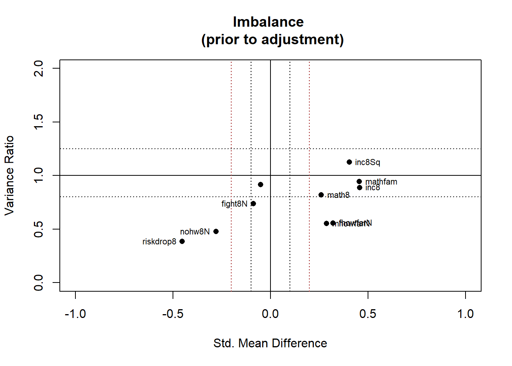
11.4 Check Overlap
Let’s check overlap between the treatment and comparison groups on our baseline achievement covariate, math8 (before using any adjustment).
overlap(x = ca$math8, z = ca$catholic,
title = "Math in Grade 8 by group")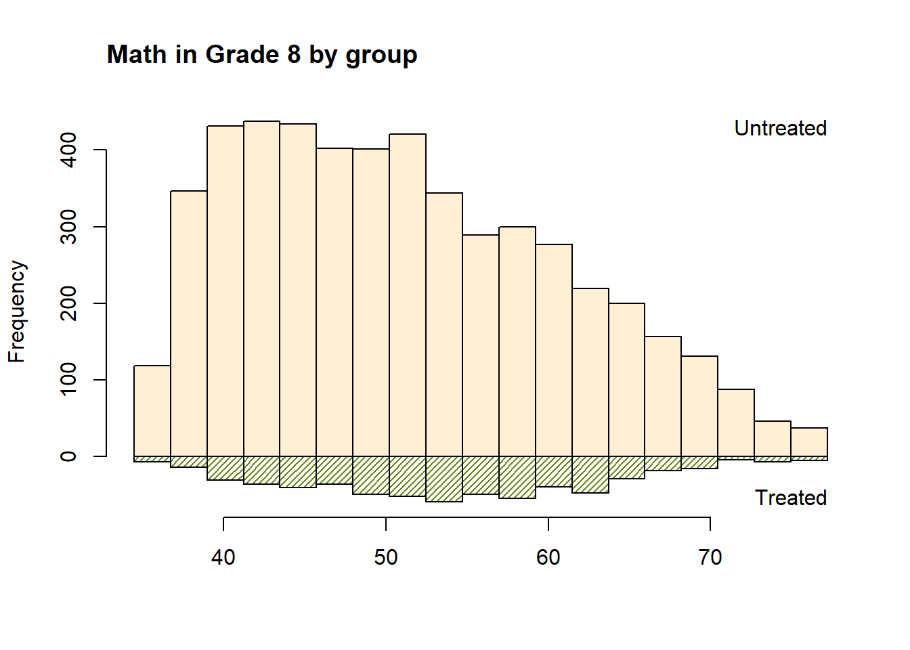
We use the same plot function with all of the other covariates as well. The density plots provide similar information, so we turn to that next.
dnsty(x = ca$math8, grp = ca$catholic, main = "Math in Grade 8", legtitle="Catholic")We see that with this covariate, the distribution and means differ between the two treatment groups.
We can examine all of the covariate plots by putting our customized dnsty() plot function in a for loop. The par(mfrow = c(2,2)) option before the plots sets up the dimensions of the plots to have two-by-two panels of the plots instead of the default. After this code, we should reset it to par(mfrow = c(1,1)), which we do below.
par(mfrow = c(2,2)) # Setting the plots to have two-by-two in the printout.
for (i in 1:length(covnames)){
nam <- covnames[i]
x <- ca[, nam]
if (!is.numeric(x)) x <- as.numeric(x)
dnsty(x, ca$catholic, main = nam, legtitle = "Catholic")
}
par(mfrow = c(1,1)) # Resetting the plots back to the default one-by-one dimension.Instead of doing that, let’s use our custom function dnsty_plotter():
dnsty_plotter(ca, covnames, grp = ca$catholic,
subtitle = "(Before IPTW)",
legtitle = "Catholic")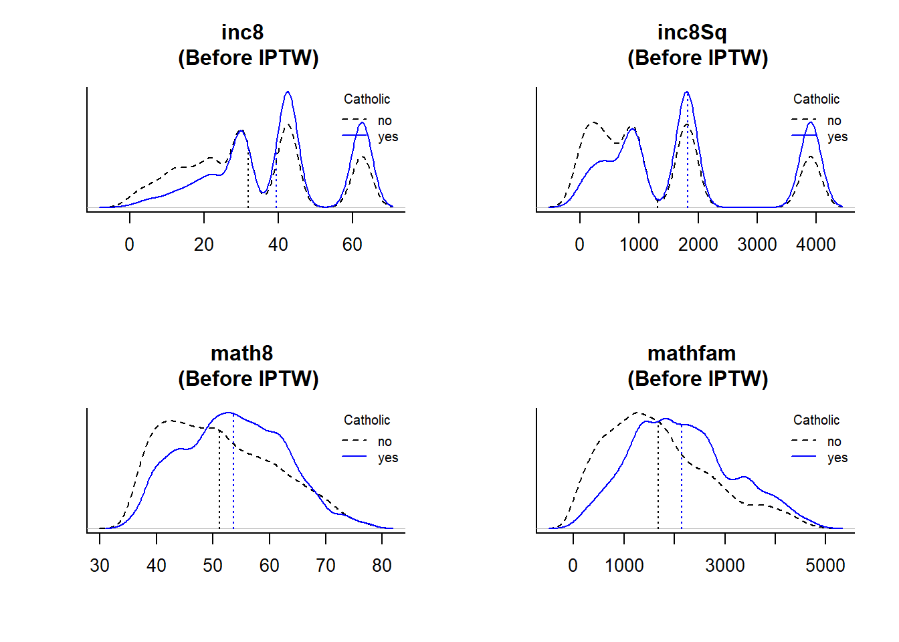
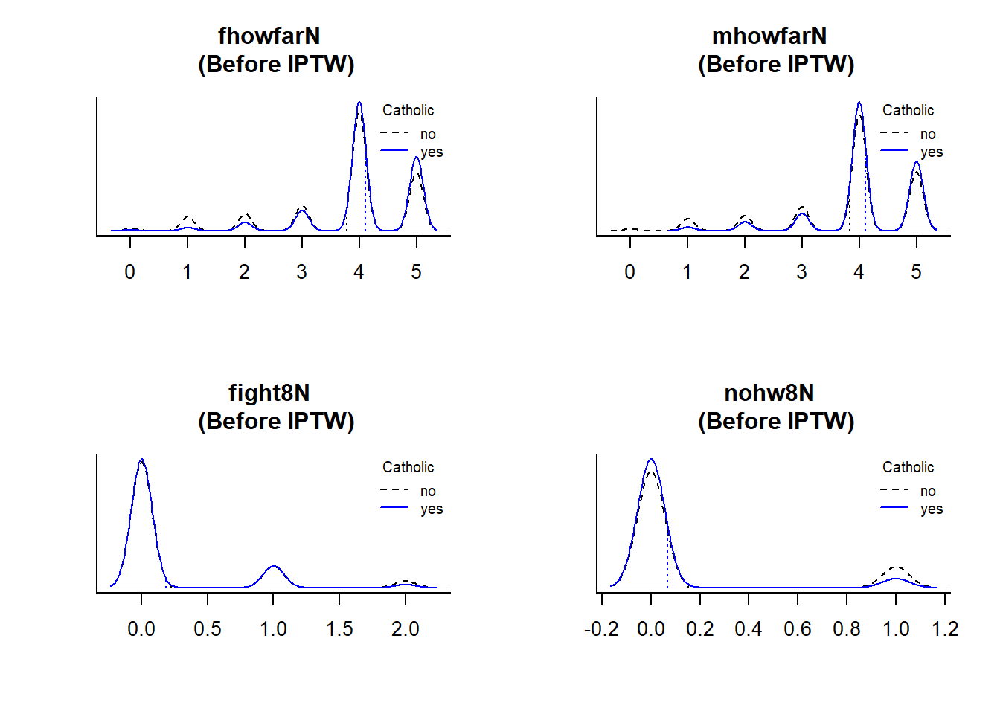
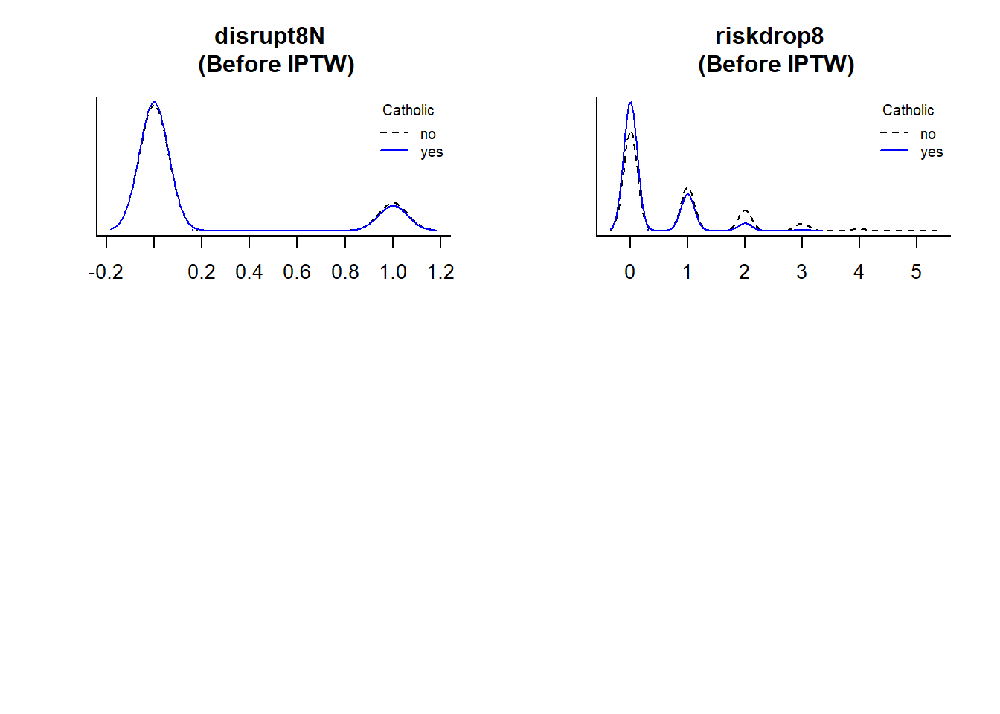
There is room for improvement in overlap for some of these covariates, such as math8 and inc8Sq. After we use IPWs, we can see if these distributions become more similar.
11.5 Calculate the Weights
Let’s fit an initial propensity-score model and save each ith person’s fitted estimate as the propensity score, which is often symbolized as \(\hat{e}(x_i)\), or more succinctly as \(e(x)\), and which we’ll save in the code as ps.
We can use our object that contains the names of our covariates, covnames to create the equation for our propensity score model. We can use the as.formula() function with the paste() function. Notice that we have a second paste function inside the first, this paste(covnames, collapse = ' + ') code takes the elements from our covnames object and puts a + between each, which is what is needed in our formula. Notice that our equation does not include polynomials unless we create these up front, as we did with the inc8Sq covariate (from inc8Sq <- ca$inc8^2).
(ps_mdl1 <- as.formula(paste('catholic', '~', paste(covnames, collapse = ' + '))))## catholic ~ inc8 + inc8Sq + math8 + mathfam + fhowfarN + mhowfarN +
## fight8N + nohw8N + disrupt8N + riskdrop8Let’s use our formula in our propensity-score model
out1 <- glm(ps_mdl1, data = ca, family = 'binomial')
summary(out1)##
## Call:
## glm(formula = ps_mdl1, family = "binomial", data = ca)
##
## Deviance Residuals:
## Min 1Q Median 3Q Max
## -0.7804 -0.5518 -0.4362 -0.2887 3.0352
##
## Coefficients:
## Estimate Std. Error z value Pr(>|z|)
## (Intercept) -4.7597835 0.6893936 -6.904 5.05e-12 ***
## inc8 0.0544244 0.0190915 2.851 0.004362 **
## inc8Sq -0.0001894 0.0001732 -1.094 0.274104
## math8 0.0215572 0.0123655 1.743 0.081275 .
## mathfam -0.0004537 0.0002873 -1.579 0.114328
## fhowfarN 0.1963326 0.0866025 2.267 0.023387 *
## mhowfarN 0.0256765 0.0869210 0.295 0.767688
## fight8N -0.4742975 0.3246260 -1.461 0.143999
## nohw8N -0.6880268 0.1760060 -3.909 9.26e-05 ***
## disrupt8N 0.6927506 0.3858716 1.795 0.072608 .
## riskdrop8 -0.3033031 0.0843135 -3.597 0.000322 ***
## ---
## Signif. codes: 0 '***' 0.001 '**' 0.01 '*' 0.05 '.' 0.1 ' ' 1
##
## (Dispersion parameter for binomial family taken to be 1)
##
## Null deviance: 3795.3 on 5670 degrees of freedom
## Residual deviance: 3608.3 on 5660 degrees of freedom
## AIC: 3630.3
##
## Number of Fisher Scoring iterations: 6ca$ps <- out1$fittedThe weights for the ATE are calculated as the inverse of the observation’s propensity to be in the group they are in. For the treatment group, the ATE weight is \(W_i = \frac{1}{\hat{e}(x_i)}\); for the control group, it is \(W_i = \frac{1}{1-\hat{e}(x_i)}\). In a single equation, we can use the treatment group status (\(Z_i = 1\) for the treatment and \(Z_i = 0\) for the control) as a switch:
\[\begin{equation} \text{ATE IPW} = \frac{Z_i}{\hat{e}(x_i)} + \frac{1-Z_i}{1-\hat{e}(x_i)} \tag{11.1} \end{equation}\]
For the ATT, the weights are 1 for the treatment group and the odds for the control group, \(\frac{\hat{e}(x_i)}{1-\hat{e}(x_i)}\). In a single equation,
\[\begin{equation} \text{ATT IPW} = {Z_i} + (1-Z_i)\frac{\hat{e}(x_i)}{1-\hat{e}(x_i)} \tag{11.2} \end{equation}\]
We can think about the counterfactual in the ATT to help us understand this weighting. We’re interested in the effects on the treated and we seek to know what their counterfactuals would be so we can estimate an unbiased group difference. A control-group person’s odds of being in the treatment group weights them as a counterfactual. In other words, a control-group person with a greater likelihood of selecting into the treatment group will be more heavily weighted in the estimation than will a control-group person who has very little interest in being treated.
In our data set, we need to use the numeric version of our treatment variable, catN:
ca$ipwt_ATE <- with(ca, catN / ps + (1 - catN) / (1 - ps))
ca$ipwt_ATT <- with(ca, catN + (1- catN) * ps / (1 - ps)) 11.5.1 Dealing with extreme weights
One potential problem with weighting is having extreme weights. The other potential problem is coverage (we can use density plots). Let’s see if there are any extreme weights:
with(ca, by(ipwt_ATE, catN, summary))## catN: 0
## Min. 1st Qu. Median Mean 3rd Qu. Max.
## 1.003 1.060 1.112 1.117 1.168 1.356
## ------------------------------------------------------------
## catN: 1
## Min. 1st Qu. Median Mean 3rd Qu. Max.
## 4.061 5.901 7.377 9.588 9.968 100.097with(ca, by(ipwt_ATT, catN, summary))## catN: 0
## Min. 1st Qu. Median Mean 3rd Qu. Max.
## 0.002602 0.059984 0.112218 0.116612 0.168238 0.355953
## ------------------------------------------------------------
## catN: 1
## Min. 1st Qu. Median Mean 3rd Qu. Max.
## 1 1 1 1 1 1It seems like with the ATE estimation, the treatment-group weights have some outliers:
with(ca, quantile(ipwt_ATE, .99))## 99%
## 14.39635Some researchers suggest we truncate to the 99 percentile (discussed in Leite, 2017, p. 51).
ca$ipwt_ATEtrunc <- with(ca,
ifelse(ipwt_ATE > quantile(ipwt_ATE, .99),
quantile(ipwt_ATE, .99), # what to do if TRUE
ipwt_ATE )) # What to do otherwise
with(ca, by(ipwt_ATEtrunc, catN, summary))## catN: 0
## Min. 1st Qu. Median Mean 3rd Qu. Max.
## 1.003 1.060 1.112 1.117 1.168 1.356
## ------------------------------------------------------------
## catN: 1
## Min. 1st Qu. Median Mean 3rd Qu. Max.
## 4.061 5.901 7.377 8.369 9.968 14.396Or, we could stabilize the weights (discussed in Leite, p. 52).
ca$C <- with(ca, ifelse(catN == 1, ps, 1-ps))
constants <- with(ca, by(C, catN, mean))
const_t <- constants[2]
const_c <- constants[1]
# Here is Equation 3.7 in Leite:
ca$ipwt_ATEstab<- with(ca,
catN * const_t / ps + (1 - catN) * const_c / (1 - ps))
with(ca, by(ipwt_ATEstab, catN, summary))## catN: 0
## Min. 1st Qu. Median Mean 3rd Qu. Max.
## 0.9011 0.9526 0.9996 1.0035 1.0499 1.2186
## ------------------------------------------------------------
## catN: 1
## Min. 1st Qu. Median Mean 3rd Qu. Max.
## 0.5324 0.7737 0.9673 1.2571 1.3069 13.1239In the rest of this tutorial, we will use the weights as they are rather than using truncation or stabilization. We can see how the plots and estimates are similar to what are described in the latter part of Chapter 12 of Murnane and Willet (2011).
11.5.2 Specifying whether to estimate ATE or ATT
Early in our study, we will have decided whether the ATE or ATT is more appropriate for our research question. With the ATE, we are interested in the average causal effect after accounting for selection bias. With the ATT, we are interested in the effect of being in the treatment group in comparison to that counterfactual condition, which is best estimated by weighting counterparts in the control group based on their likelihood of being in the treatment.
We can use the code here to switch either the ATE or the ATT on, and then examine the balance and overlap. Try switching on another other and examining balance and overlap. Then, after we’re happy with our design part (our PS model), we can estimate the effect on our outcome.
ca$ipwt <- ca$ipwt_ATE
#ca$ipwt <- ca$ipwt_ATT # Activate this one If we want the ATT11.6 Conduct balance checks after weighting
Let’s use our wselect.diff() to examine the imbalance statistics in the covariates after we have weighted the observations.
imbal_adj <- t(sapply(ca[, covnames],
wselect.diff, grp = ca$catholic, wt = ca$ipwt))
round(imbal_adj,3)## Mean.Diff Std.Error p-value Std.Mean.Diff Var.Ratio
## inc8 -0.238 0.465 0.609 -0.014 1.038
## inc8Sq -4.996 33.395 0.881 -0.004 1.007
## math8 0.150 0.249 0.545 0.016 0.833
## mathfam -9.241 27.831 0.740 -0.009 1.013
## fhowfarN 0.006 0.029 0.834 0.006 0.900
## mhowfarN 0.044 0.027 0.105 0.043 0.788
## fight8N -0.033 0.013 0.011 -0.068 0.880
## nohw8N 0.013 0.009 0.181 0.036 1.075
## disrupt8N -0.027 0.010 0.006 -0.074 0.878
## riskdrop8 -0.025 0.023 0.272 -0.029 0.800We have achieved pretty good balance. The IPWs balance the distributions of the observed covariates pretty well. There are two covariates with borderline imbalance in their variance ratios, but this may be acceptable.
imbal_plotter(imbal_adj, subtitle = "(after IPTW adjustment)")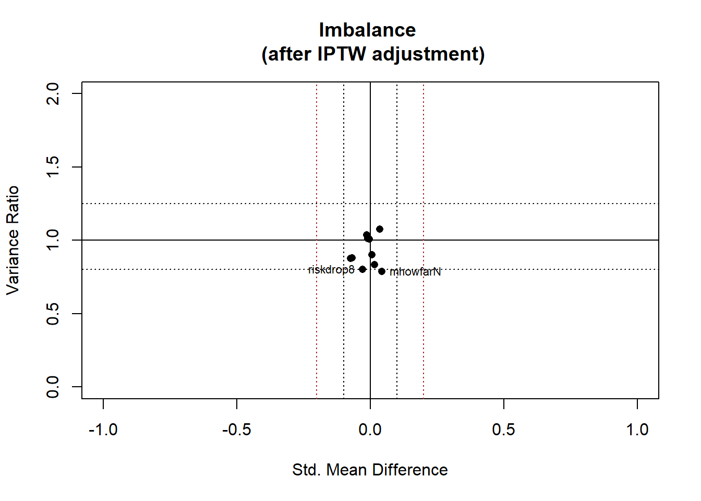
The plot, in comparison to its counterpart prior to adjustment, illustrates this improved balance.
We can also check the overlap using density plots for each covariate. The vertical lines also show the balance in the mean on the covariate for each group.
dnsty_plotter(ca, covnames, grp = ca$catholic,
wt = ca$ipwt,
subtitle = "(after IPTW)")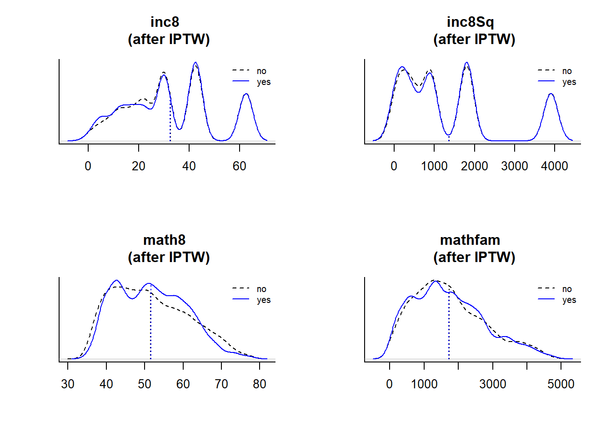
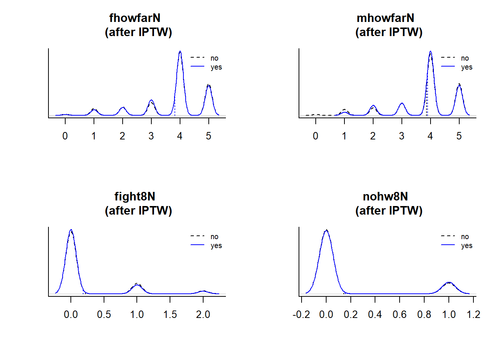
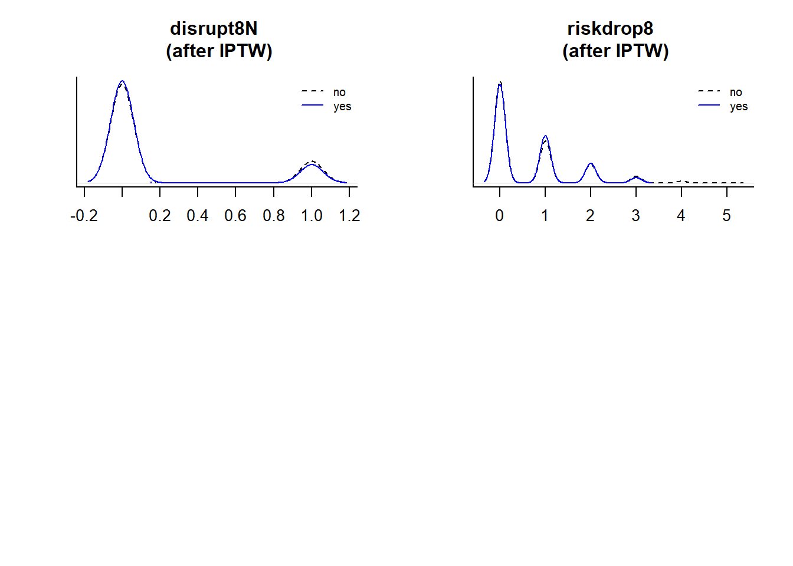
We can check the balance and overlap of the (logit of the) propensity score estimates:
dnsty(ca$ps, ca$catholic,
main = "PS (unadjusted)",
legtitle="Catholic")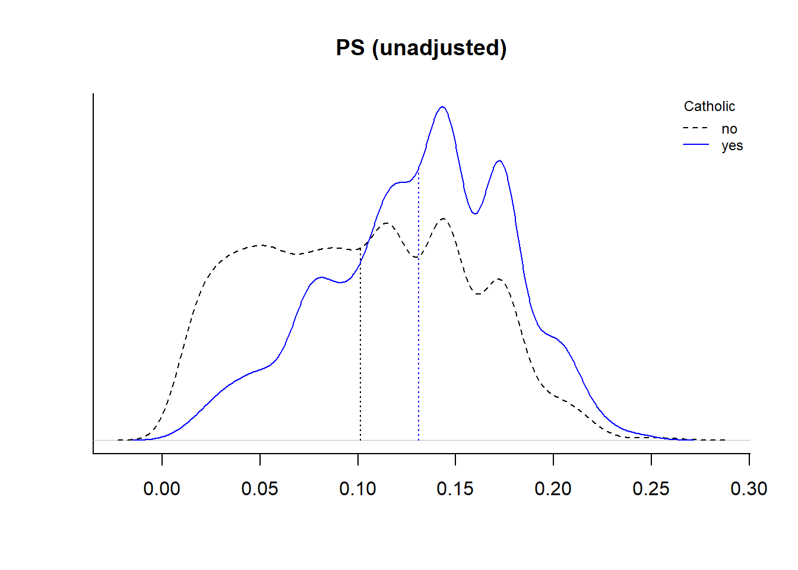
dnsty(ca$ps, ca$catholic,
wt = ca$ipwt_ATT,
main = "PS after IPW weights",
legtitle="Catholic")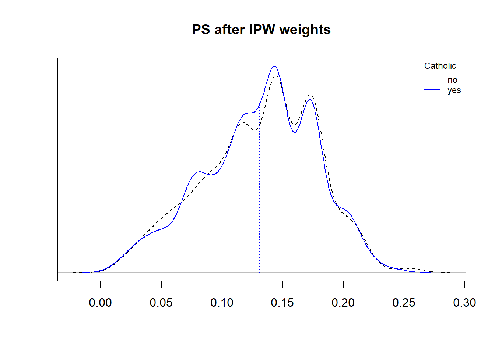
These plots of the propensity score densities, by group, help us to make claims about common support. The post-weighting plots we have here provide support for our method of propensity-score estimation, at least with this set of covariates.
11.7 Estimate the Treatment Effect
Now we bring in the data set that has the outcomes.68
outcome <- read.csv("ch12_cath_outcomes_only.csv")
ca2 <- merge(ca, outcome, by = "id")
str(ca2[,c(1, (ncol(ca2)-5):ncol(ca2) ) ]) # looking at the first and the last five columns' structure.## 'data.frame': 5671 obs. of 7 variables:
## $ id : int 124902 124915 124916 124932 124944 124966 124968 124970 124972 124974 ...
## $ ipwt_ATEtrunc: num 13.62 9.99 10.52 11.41 8.9 ...
## $ C : num 0.0734 0.1001 0.095 0.0877 0.1123 ...
## $ ipwt_ATEstab : num 1.79 1.31 1.38 1.5 1.17 ...
## $ ipwt : num 13.62 9.99 10.52 11.41 8.9 ...
## $ math12 : num 49.8 59.8 50.4 45 54.3 ...
## $ read12 : num 61.4 58.3 59.3 49.6 57.6 ...The outcome variables, math12 and read12 (the latter is not included in this lesson), are appended to the last column of the data frame.
As we did in the previous lesson, we can estimate the naïve (prima facie) effect (i.e., without any propensity-score adjustment). This is a biased estimate, but it is good to have a record of it in case reviewers want to know whether our weighting led to a very different statistical conclusion.
summary(lm(math12 ~ catholic, data = ca2)) ##
## Call:
## lm(formula = math12 ~ catholic, data = ca2)
##
## Residuals:
## Min 1Q Median 3Q Max
## -21.6195 -7.4845 0.2053 7.3653 20.7254
##
## Coefficients:
## Estimate Std. Error t value Pr(>|t|)
## (Intercept) 50.6447 0.1323 382.815 <2e-16 ***
## catholicyes 3.8949 0.4095 9.512 <2e-16 ***
## ---
## Signif. codes: 0 '***' 0.001 '**' 0.01 '*' 0.05 '.' 0.1 ' ' 1
##
## Residual standard error: 9.428 on 5669 degrees of freedom
## Multiple R-squared: 0.01571, Adjusted R-squared: 0.01554
## F-statistic: 90.48 on 1 and 5669 DF, p-value: < 2.2e-16We could estimate the effect with weighted least squares regression, with the weights being the IPWs. This will give us the correct estimate; however, it will result in the incorrect standard error.
summary(lm(math12 ~ catholic, data = ca2, weights = ipwt))##
## Call:
## lm(formula = math12 ~ catholic, data = ca2, weights = ipwt)
##
## Weighted Residuals:
## Min 1Q Median 3Q Max
## -172.158 -8.282 0.316 8.868 57.434
##
## Coefficients:
## Estimate Std. Error t value Pr(>|t|)
## (Intercept) 50.9057 0.1743 292.064 < 2e-16 ***
## catholicyes 1.4711 0.2464 5.969 2.53e-09 ***
## ---
## Signif. codes: 0 '***' 0.001 '**' 0.01 '*' 0.05 '.' 0.1 ' ' 1
##
## Residual standard error: 13.13 on 5669 degrees of freedom
## Multiple R-squared: 0.006246, Adjusted R-squared: 0.006071
## F-statistic: 35.63 on 1 and 5669 DF, p-value: 2.529e-09We see an estimate of 1.47.69 Again, the standard error is not correct.
11.7.1 Estimating the correct standard error
We can estimate the standard errors using the survey() package (Lumley, 2021).70
The first thing we do is create an object that contains the design, using the svydesign() function. The first argument, ids = ~1 specifies what the primary sampling unit is. In our case, we use ~1 because this instructs the function to use each row in the data frame as the primary sampling unit. If we also had used a complex survey design, we might have identified a column in the data that identified the cluster—we’re not using that design in this example. The weights = ~ipwt argument specifies which variable in the data frame is the weights.
library(survey)
sdesign <- svydesign(ids = ~1, weights = ~ipwt, data = ca2)Then, we use this design with the package’s svyglm() function, which estimates the linear model with the weights.
fit <- svyglm(math12 ~ catholic, design = sdesign)
summary(fit)
confint(fit)##
## Call:
## svyglm(formula = ..1, design = ..2)
##
## Survey design:
## survey::svydesign(...)
##
## Coefficients:
## Estimate Std. Error t value Pr(>|t|)
## (Intercept) 50.9057 0.1337 380.623 < 2e-16 ***
## catholicyes 1.4711 0.5616 2.619 0.00883 **
## ---
## Signif. codes: 0 '***' 0.001 '**' 0.01 '*' 0.05 '.' 0.1 ' ' 1
##
## (Dispersion parameter for gaussian family taken to be 86.08982)
##
## Number of Fisher Scoring iterations: 2
##
## 2.5 % 97.5 %
## (Intercept) 50.6434967 51.167872
## catholicyes 0.3700838 2.572023We see that the effect is 1.47 with a standard error of 0.56, which is statistically significant and with a 95% confidence interval of 0.37 to 2.57.
11.7.2 Use a doubly robust estimate
We have applied the inverse-propensity-score weighting approach to adjust our estimate and standard error of the causal effect. To provide an even stronger argument that our estimate has been adjusted based on these covariates, we can use what’s called a doubly robust (Bang & Robins, 2005) approach and further condition on any ornery covariates—those that remain somewhat imbalanced even after we have adjusted observations by their propensity scores.
If we flag any imbalance, such as by arbitrarily setting \(\leq .05\) standardized mean difference as the criterion for inclusion, we can determine which covariates, if any, to include in the doubly-robust model.
covs_need_robust <- imbal_adj[ abs(imbal_adj[,4]) > .05, ] #Just seeing which covariates to include
row.names(covs_need_robust)## [1] "fight8N" "disrupt8N"With the ATE, there are two covariates we can include.71
If we want, we can automate this selection of covariates to include in the robust formula by pulling out the covariate names and using the as.formula() function.
covs_for_robust <- row.names(covs_need_robust)
(robust_formula <- as.formula(paste('math12', '~ catholic + ', paste(covs_for_robust, collapse = ' + ')))) ## math12 ~ catholic + fight8N + disrupt8NAgain, we can use the survey package. We already specified the survey design,sdesign.
library(survey)
fit_rob <- svyglm(robust_formula, design = sdesign)
summary(fit_rob)##
## Call:
## svyglm(formula = ..1, design = ..2)
##
## Survey design:
## survey::svydesign(...)
##
## Coefficients:
## Estimate Std. Error t value Pr(>|t|)
## (Intercept) 51.339068 0.170132 301.761 <2e-16 ***
## catholicyes 1.406038 0.565228 2.488 0.0129 *
## fight8N -1.982497 1.385668 -1.431 0.1526
## disrupt8N 0.005463 1.710385 0.003 0.9975
## ---
## Signif. codes: 0 '***' 0.001 '**' 0.01 '*' 0.05 '.' 0.1 ' ' 1
##
## (Dispersion parameter for gaussian family taken to be 85.16889)
##
## Number of Fisher Scoring iterations: 2With this doubly-robust method, we see a slight change in the estimated effect and standard error. We have accounted for the selection bias in the set of covariates. With those covariates that were still a little imbalanced, we further accounted for bias.
11.8 Using the Twang Package
11.8.1 Examining covariate balance
There are several packages available for propensity score analyses. The twang package (Cefalu et al., 2021) offers a convenient function (bal.stat()) for examining the balance of our covariates. Here, we are applying it to our data with the weightings. We see very similar estimates to our standardized mean difference column reported earlier. It also conveniently reports the weighted mean and standard deviation in each of the two groups, prefixing them with t for treatment and c for control. The package requires the treatment variable be numeric, so instead of catholic, we use its numeric version, catN, which we had created in the previous lesson.
library(twang)
twang_balout <- bal.stat(ca,
vars = covnames,
treat.var = "catN",
w.all = ca$ipwt,
sampw = 1, # set to 1 because we don't have sampling weights
estimand = "ATE",
get.ks = FALSE,
multinom = FALSE)
round(twang_balout$results, 3)## tx.mn tx.sd ct.mn ct.sd std.eff.sz stat p
## inc8 32.420 17.656 32.658 17.343 -0.014 -0.215 0.830
## inc8Sq 1362.283 1259.745 1367.279 1255.879 -0.004 -0.075 0.940
## math8 51.642 8.922 51.491 9.781 0.016 0.300 0.764
## mathfam 1719.485 1051.287 1728.726 1045.192 -0.009 -0.146 0.884
## fhowfarN 3.824 1.051 3.818 1.108 0.005 0.082 0.935
## mhowfarN 3.902 0.957 3.858 1.079 0.041 0.700 0.484
## fight8N 0.186 0.469 0.219 0.501 -0.066 -1.261 0.207
## nohw8N 0.156 0.363 0.143 0.350 0.036 0.428 0.669
## disrupt8N 0.152 0.359 0.179 0.384 -0.071 -1.512 0.131
## riskdrop8 0.598 0.810 0.624 0.906 -0.028 -0.378 0.70611.8.2 Estimating the propensity scores and getting the weights
With twang, we can use a formula similar to the one we created using the as.formula() function for the propensity score model using glm(); the difference is we need to specify the outcome variable as our numeric version of the variable, so we’ll use catN instead of catholic. In twang, the ps() function is available for estimating the propensity scores. The default method is generalized boosted modeling (GBM) instead of logistic regression. This procedure takes a minute to run because, compared to regular old logistic regression, GBM uses a more intensive iterative procedure.
library(twang)
# Creating a new formula, with catN instead of catholic as the treatment-group variable.
ps_mdl_4twang <- as.formula(paste('catN', '~', paste(covnames, collapse = ' + ')))
set.seed(10310210)
twang_ps <- ps(ps_mdl_4twang,
data = ca,
estimand = "ATE",
stop.method = "es.mean", # standardized effect size
verbose = FALSE) # To prevent the in-progress iterations from printing in the consoleWe have saved the outcome of the propensity-score model as an object. We can use twang’s bal.table() function on this to return the balance statistics of all of the covariates used in the model both before and after they were weighted by the inverse-probability weights.
bal.table(twang_ps)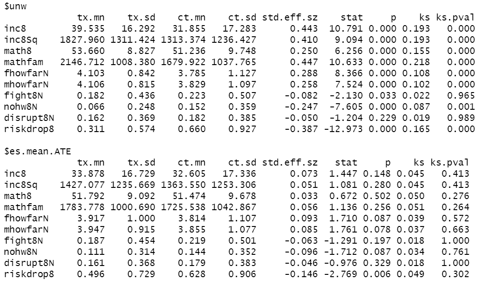
We can examine plots of the standardized mean difference before and after weighting. This plot is nice because it displays the 0.10 benchmark for evaluating balance. Our remaining culprit here is riskdrop8.
plot(twang_ps, "es")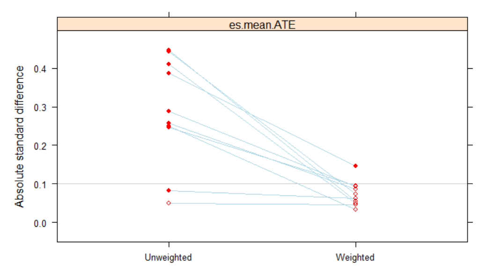
We can save the GBM-estimated propensity scores to our data set—the one without the outcome variables in case we need to further assess how well the weighting balanced the covariates.
ca$ps_gbm <- twang_ps$ps$es.mean.ATETo get the IP weights, we use the get.weights() function. We need these, of course, when we estimate the effects.
ca$ipw_gbm <- get.weights(twang_ps, stop.method = "es.mean")We might wish to use our custom function, dnsty(), to examine whether common support after adjustment is as nice as it was with our logistic-regression approach to estimating propensity scores.
dnsty(ca$ps_gbm, grp = ca$catholic,
main = "GBM PS (unadjusted)",legtitle="Catholic")
dnsty(ca$ps_gbm, grp = ca$catholic, wt = ca$ipw_gbm, # Weights are now included
main = "GBM PS (adjusted)",legtitle="Catholic")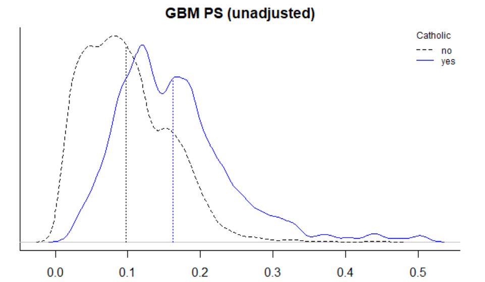
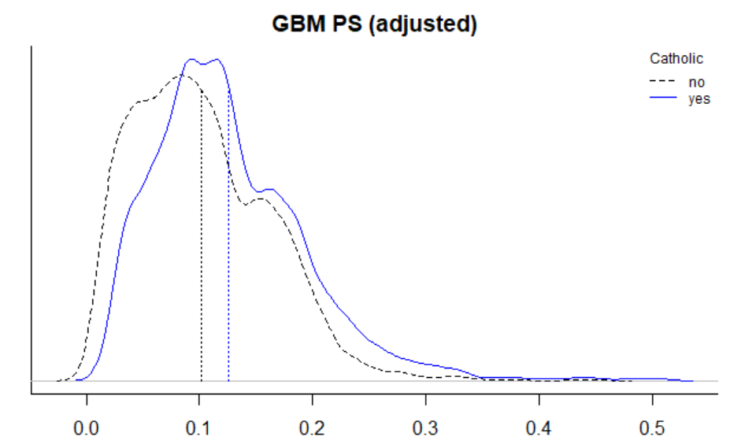
The GBM IP weights did improve common support over the unadjusted GBM propensity scores but not as well we saw before with the logistic-regression IP weights. We might use this evidence in our decision about whether to use logistic-regression over GBM.
11.8.3 Estimating the effect
Now that we have the weights, we can merge the data set with the outcome variables with this one and estimate the effect.
outcome <- read.csv("ch12_cath_outcomes_only.csv")
ca2 <- merge(ca, outcome, by = "id")library(survey)
sdesign_2 <- svydesign(ids = ~1, weights = ~ipw_gbm, data = ca2)
fit_gbm <- svyglm(math12 ~ catholic, design = sdesign_2)
summary(fit_gbm)
confint(fit_gbm)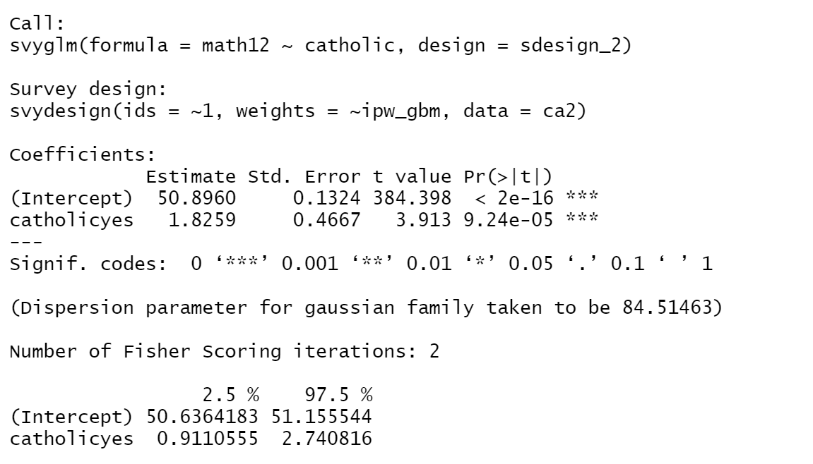
With the generalized boosted model approach to estimating the propensity scores with this same set of covariates, we see a slightly higher estimate of the effect compared to the one with logistic regression. However, we have still arrived at the same statistical conclusion in terms of the direction of the effect and statistical significance.
References
We do this with the
cov.wt()function, which returns the weighted means as$centerand the weighted variance as$cov(because we usecov.wt()with a single variable, there is only one value for each). We use thedrop = FALSEargument because thecov.wt()function otherwise expects us to include at least two columns. We use this procedure for each treatment group (within ourwselect.diff()function) by creating a custom function,stat.wt(), and applying it to each group with theby()function.↩︎Here, we’re using the
merge()function; in previous lessons, we had used theleft_join()function (from the dplyr package) to achieve the same result (thoughleft_join()is safer because it retains observations in the first data frame that are not matched in the second).↩︎This estimate of 1.47 is also reported in Murnane & Willett, p. 327.↩︎
This standard error estimation uses Taylor series linearization.↩︎
Note that with the ATT estimate or a different method of adjusting the extreme weights, such as with truncation, we’d probably make different choices.↩︎